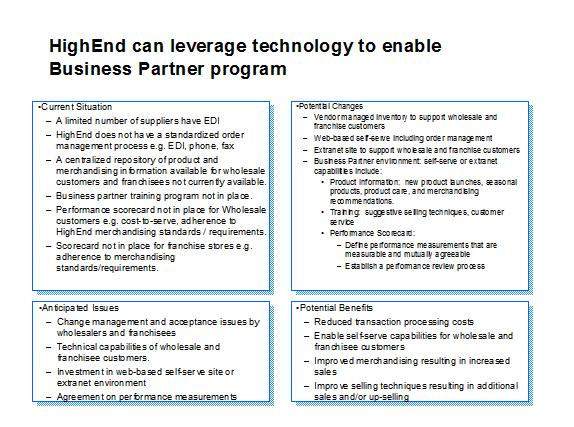

| Artifact: Marketing Channel Strategy
(BUS 423)
|
|
 |
| Channels exist to deliver value to buyers-good pricing, easy access, consistency and, if possible, a sense of belonging. |
Domains: Marketing
Work Product Kinds: Strategy |
|
Purpose
| The purpose of this work product description is to determine which channels will provide the optimal "path to market" for
delivering products and services, based on considerations of buyer behavior, buyer wants and needs, and channel ROI. |
Description
| Main Description |
Customers should grow to be familiar and comfortable with the channel so that friction is removed, to the extent
possible, from the buying process. Through channel strategy, the management team either chooses or adjusts paths to
market. The Marketing Channel Strategy WPD produces a strategy that helps clients decide how to match customer buying
expectations to existing and new channels.
Channel strategy has long held its position among the four tenets of marketing-product, price, promotion and place.
Now, however, channels have come to encompass far more than place alone. Today’s effective distribution channels are
sophisticated systems focused on the buyer experience. Each entity in the channel is increasingly dependent upon the
others to deliver perceived value.
|
| Notation |
The marketing channel strategy can be narrowed to explore one channel, several or used as a comparison among multiple
channels. If single channel is being explored, it may be useful to demonstrate the current situation, examine the
potential changes and issues and outline the benefits.

This can be included in a final presentation in either a formal report or a graphical presentation using common
presentation software. In the final presentation to the client, the detail by channel should be included as
supporting documentation. The overall summary, or channel comparison, showing the clear strengths and weaknesses
of each channel should be presented as the highlight of the final presentation. A high level comparison, of
the main points for one or all of the channels, such as that described in the example section, is the most powerful
deliverable and should be the lead in, particularly at the senior management level.
|
Illustrations
Key Considerations
Points to consider in validating that a company has a viable channel strategy are as follows:
-
Does the channel strategy address the strengths and weaknesses of each channel?
-
Is there alignment between the channel strategy and the overall objectives expressed for the product lines and
brands?
Channels are quite complex to evaluate. When evaluating channels, focus on the desirable customer experience and
customer wants/needs, rather than the technology to support the value proposition.
|
Tailoring
| Impact of not having |
-
The client may not understand the time required to develop a solid position within the channel and may pre-maturely
abandon what would otherwise have been a successful channel. On the other hand, it may not move fast enough to
seize a channel position. Time is an important aspect in developing channels because channels are built on
relationships and relationships take time.
-
The company may fail to exploit an opportunity in a new or existing channel, whether regarding customer reach or
cost efficiencies.
-
Management may fail to pay sufficient attention to infrastructure or expansion issues within the channel. For
example, simple assumptions about potential expansion may be rendered moot by channel conflict.
-
The company may fail to enter channels where it would be strong, actually enter channels where it is destined to be
weak, or fail to maneuver optimally within an existing channel.
-
Management may pursue a channel that would damage its brand identity or fail to enter a channel that might help
strengthen (not just expand) the brand.
-
The company may fail to take into account the actions of competitors within the channel.
-
The company may lose sight of the channel’s role in customer service and customer relationship management.
|
| Reasons for not needing | If a company can produce a written document addressing channel strategy, then it may not require a new analysis. However,
assertions that, "We know our channels," may not be sufficient. Probe this issue carefully. Even a brief statement of one
or two pages crystallizes thinking and lays the foundation for superior decision making. Often, the attempt to make a brief
statement on this subject opens up numbers of questions that have not been previously addressed. |
More Information
| Guidelines |
|
| Supporting Materials |
|
| Estimation Considerations |
|
© Copyright IBM Corp. 1987, 2012 All Rights Reserved
Property of IBM
These materials are intended only for use as part of an IBM engagement |
|